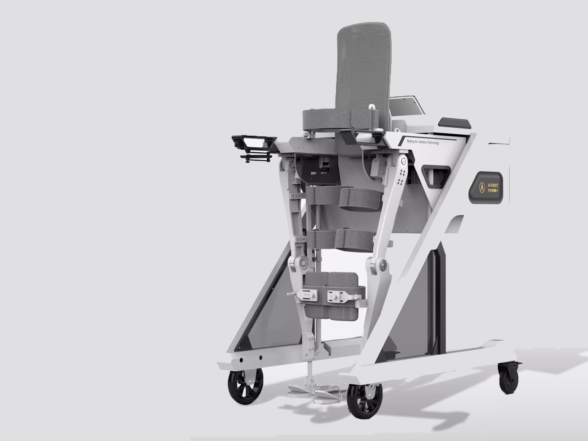
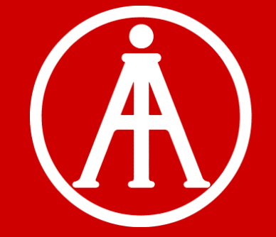
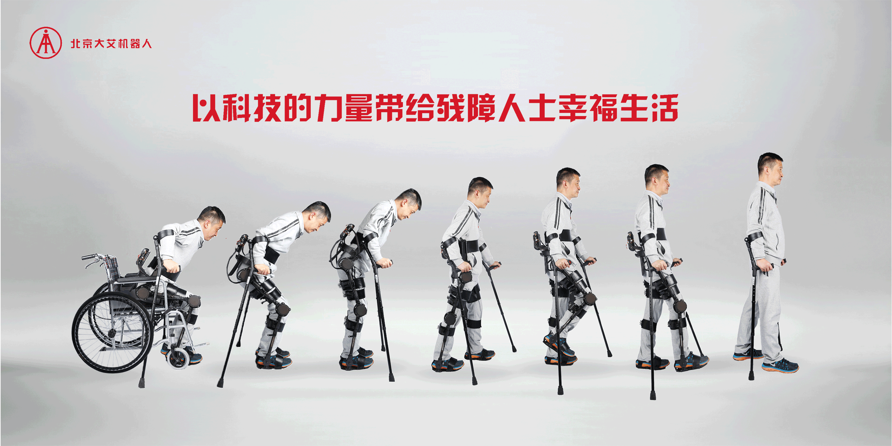
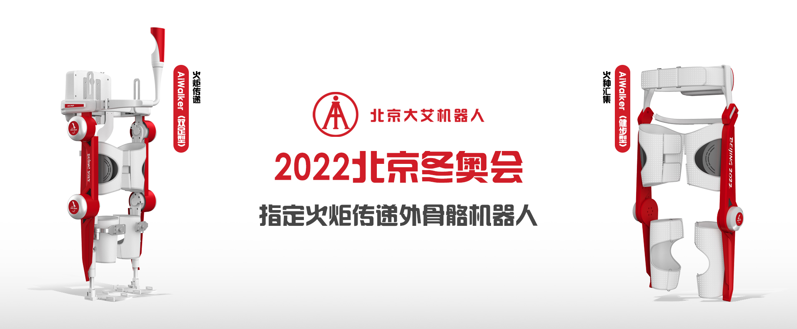

full-cycle rehabilitation service · clinic to home
AiWalker


background
What is AiWalker?
AiWalker is a lower-limb rehabilitation exoskeleton by Beijing Ai-Robotics (北京大艾机器人) — the device that carried a torch at the 2022 Beijing Winter Olympics — built for SCI, stroke, and cerebral-palsy patients relearning to walk.
This project reframes it as a full-cycle healthcare service: not a device you buy, but one continuous experience that carries a patient from supervised therapy in the hospital, through the fragile handoff, to independent recovery at home. As China pushes rehabilitation into the home, the hard problem stops being the hardware and becomes the continuity of care around it.

identifying the problem
Where the full cycle breaks
The Handoff Gap
Operating knowledge lives in the clinic. It doesn't travel home with the device — a manual can't replace a therapist standing beside you.
Untrained Operators
Overnight, the daily operator changes from a trained therapist to a family caregiver who has never set up a medical device in their life.
Care Goes Dark
Once home, no one sees progress or setbacks until the next clinic visit — if there even is one. Recovery happens unobserved.
the user
Who is the user?
One device, two very different people, at two very different moments. A recovering patient who was never meant to operate medical hardware — and a family caregiver who inherits that job the day they leave the hospital, with a therapist watching from a distance, if at all.
To ground the service I ran a 103-user multi-region survey, mapping where people actually dropped off. The pain wasn't the walking — it was everything around it once the professionals were gone.
user personas
Who are the users?
Recovering, Alone
"In the hospital a therapist was always there. At home I'm scared I'll use it wrong and set my recovery back."
Suddenly Responsible
"I'm not trained, but I'm the one strapping it on every morning. It has to be impossible to get wrong."
Out of Sight
"Once they go home I lose visibility. I need to see progress and step in before a small problem becomes a setback."
competitive analysis
How does the market solve it?
I benchmarked 20+ competing rehabilitation devices and companies. Almost every one competes on the same axis: more motors, finer sensors, smarter gait algorithms. The race is a hardware race.
Almost no one designs the service around the device once it leaves the clinic — onboarding, home-mode simplicity, remote check-ins, a way back to a professional when something goes wrong. That absence is the opportunity: the gap isn't another hardware spec, it's the service wrapper nobody had built.
Hardware-first — competing on specs.
Service-first — competing on continuity of care.
my role
Product Service Design Assistant
User Research. Led the 103-user multi-region survey to pinpoint where patients dropped off — turning scattered frustration into a pattern the team could act on.
Product Experience. Managed the main-site UI and error-reporting pipeline, diagnosing bugs and converting live friction data into actionable design signals.
Market Research. Benchmarked 20+ competing devices — finding the gap wasn't in hardware, but in the service wrapper nobody had built.
service blueprint
How care stays continuous
- Hospital
- Handoff · break point
- Home
- Design layer
Therapist-led
Therapist sets up & operates the device. Full guidance on hand.
Handoff
Operating knowledge doesn't transfer with the device. Information gap.
Caregiver-led
Family faces the interface alone. No help present.
My service interventions · bridging the handoff
- 01Caregiver onboarding
- 02Simplified home-mode UI
- 03Remote tele-rehab check-in
- 04Error loop → therapist

reflections
What the project changed
"Which hardware feature do we add next?"
"How do we keep care continuous once the patient goes home?"
"The product failed" is usually "the service didn't catch the person" — asymmetry between roles, amplified at a handoff, landing on the most vulnerable user.
Note: the blueprint, personas, and four touchpoints are my design synthesis based on the research — honestly stated as "research delivered, service proposed."